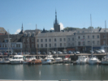

Bénouville 2019 (réd. 16/09/2019)
Bénouville 2019 (réd. 16/09/2019)Un immense terrain, en haut des falaises et de la Valleuse du Curé...
Terrain non boueux cette année, et installations bien adaptées.
Toujours un climat amical et beaucoup de connaissances de bonne classe cervolistique.
 Bosc-Le-Hard 2019 (réd. 16/09/2019)
Bosc-Le-Hard 2019 (réd. 16/09/2019)Une fête conviviale, basée sur le dévouement et l'imagination de quelques-uns...
La convivialité qui en résulte est très agréable, l'absence de règles aussi.
Le terrain est immense, en plaine et sans obstacles au vent !
 Blond 2019 (réd. 01/08/2019)
Blond 2019 (réd. 01/08/2019)Un immense terrain, terre d'une vieille ferme propice aux installations
Les repas sont servis dans la vieille grange, dimanche soir compris.
Météo pluvieuse samedi mais bonne dimanche, alors le public est venu !
 St-Germain-Le-Gaillard 2019 (réd. 11/07/2019)
St-Germain-Le-Gaillard 2019 (réd. 11/07/2019)Une première pour ce club fondé pour l'occasion.
Vaste terrain en herbe bien fauchée ! Repas ou barbecue fourni, parking Camping-cars.
Ambiance de fête sans contrainte et public important pour cette petite commune !

Fécamp 2019 (réd. 28/06/2019)Un festival très attendu par tous ceux qui sont déjà venus et par d'autres.
Plage de galet, avec un insert de sable pour le beach-foot ou les Jardins du Vent !
Vent bon le matin, changeant et turbulent l'après-midi, de derrière la falaise !
 Bray-Dunes 2019 (réd. 12/06/2019)
Bray-Dunes 2019 (réd. 12/06/2019)Depuis Dunkerque, plage de sable immense, jusqu'en Belgique ! Terrains bien balisés.
Bonne ambiance, tous repas fournis (sandwichs) mais un seul en commun, dommage !
Vent plutôt faible le deuxième jour, quasi-involable le premier, avec 65 km/h et pluie !
 Cayeux2019 (réd. 28/05/2019)
Cayeux2019 (réd. 28/05/2019)Grande plage, mais de galets et pentue, mais terrain en retrait herbu ou galets, mais plat !
Ambiance quasi-familiale bien que le nombre de participants augmente tous les ans !
Météo plutôt chaude et agréable.
 Quiberville 2019 (réd. 22/05/2019)
Quiberville 2019 (réd. 22/05/2019)Près de Dieppe et de la mer, mais on ne la voit pas !
Ambiance très sympa, un très beau et vaste terrain, tondu ras !
Météo brumeuse mais peu de pluie finalement.
Tous les ans : Les reportages des années passées sont maintenant hébergés sur un site free, sans changement pour le lecteur.
Février 2006 : Incorporation d'une rubrique de Mots Croisés cervolistiques. Le traducteur anglais n'est plus valide.
Janvier 2006 : Modification globale du site avec une rubrique Techniques et Plans qui reprend certaines parties existantes mais ajoute pas mal de pages.
Février 2005 : Ajout d'un plan du site avec liens vers toutes les pages. Plan accessible avec "P", le dernier bouton à droite du menu. Insertion d'un traducteur anglais couvrant tout le site.
Janvier 2005 : Utilisation de scripts et de styles généraux de type HTML4 et CSS sur tout le site (Validé W3C).
Décembre 2004 : Mise en facteur du script d'ouverture des grandes photos, et changement de look des boutons (utilisation de styles HTML4).
Novembre 2004 : Apparition de quelques pages traduites en anglais avec quelques boutons dédiés supplémentaires. (Some english pages appear...).
9 août 04 : Gestion des photos agrandies : elles ne disparaissent plus automatiquement quand on revient à la page initiale (permet de charger une grande photo à petite vitesse pendant qu'on revient lire la page).
15 juin 2004 : Tous les plans sont maintenant agrandissables.
28 mars 2004 : Gestion des photos agrandies ; ajout page de sous-accueil "Fêtes et Reportages".
| Merci de me signaler tout problème : |